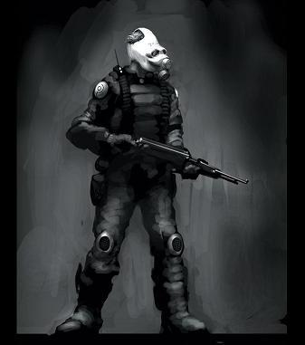

Forums galactiques > Assemblée Galactique : diplomatie officielle > Combien de temps .....
Pages : 1 2
| Le Troll Respect diplomatique : 75  01/06 ETU 21:14 | Score : 6 Détails Combien de temps allons nous supporté cela ?
Aucun gouvernement n'est en place, et le chaos et l'anarchie totale reigne dans la galaxie, et avec cela, des débats s'enlisant dans des discours interminable et pour ne donner au final que du vent ? Il faut réagir à tout cela, en frappant haut et fort ! Arès, on ne sait pas ce qu'il devient, et à part séjourner dans des palais et dormir dans un gros trône rempli de diamant et de metal précieux et bien entendu, déclaré son amour sur L'ASSEMBLEE, il est complètement inactif ! Beaucoup essaye de trouver un moyen de résoudre le problème au cour de ces débats que j'ai décrit plus haut, je ne les blâmes pas mais si ça continue, nous n'aurons aucun gouvernement à part quelqu'un qui ne sait même pas ce qu'il faut pour être à la tête du pouvoir. Il faut absolument que les élections se fassent, et que le gouvernement soit établi au plus vite ! C'est pour ça que moi, Le Troll, petit Tavernier mais qui est interressé par la politique, propose une élection de coalition qui organisera les élections. Il me faut trouver à présent ses coalitions qui veulent faire partie de la politique galactique. Coalition, venez vous inscrire vite. Même si ses élections sont clandestinnes, tanpis ! Il fallait que quelqu'un le fasse ! Maintenant, vous allez devoir vous présentez vite si cela vous interresse. Les coalitions doivent être un minimum intelligente, car nos élections ne peuvent pas se faire organnisées par une alliance du nom : "Les ahuris.", ça ne serait pas sérieux. Respectueusement, Le Troll. | ||
| Solon Respect diplomatique : 412  01/06 ETU 21:26 | Score : 1 Détails Solon passa en coup de vent à l'assemblée
Encore une volonté de changer cette galaxie, une vrai mobilisation est en train de se créée. Mais, cher Troll, ne pensez vous pas qu'en présentant chacun son idée, le peuple ne peut n'en qu'être plus indécis. Que pensez vous de l'idéologie d'Al-Kashi, qui consiste à élire un commandant de chaque ordre afin que tout le monde soit représenté. Si tout le monde va dans le même sens, cela ne peut que marcher. Vive la galaxie sans commandants égoïstes! | ||
| Siklariis Respect diplomatique : 99  01/06 ETU 21:29 | Score : 3 Détails Commandant Troll,
Si vous cherchez, je crois avoir expliqué que le vote pour chosir le scrutin des éléctions se ferait avant la fin de la semaine. Autrement dit, bientot il y en aura. Clandestines ? Surement, mais au nom de tous elles sont legitimes. Cordialement ; Siklariis Tahl. | ||
| Hélindor Ha'Nha Respect diplomatique : 4  01/06 ETU 22:03  | Score : 2 Détails Commandant Siklariis,
En effet vous affirmez que ces éléctions " clandestines " sont légitimes ...Mais derrière le mot "clandestin" il y a la conotation du secret .... ce que je veux dire c'est que tout le monde n'est pas forcement au courant de ces éléctions ... Vous avez peut être fait un appel à l'assemblée mais tous les commandants ne peuvent être au courant de tout ... certains manquent de temps pour passer à l'assemblée car ils ont plusieurs planètes à gerer! d'autres n'y prete attention etc ... Je pense donc qu'une éléction de ce genre n'est pas forcement une bonne chose .... elle ne ferait que rajouter du désordre dans ce fouillis monstreux qui est la galaxie Origine de nos jours ... | ||
| Siklariis Respect diplomatique : 99 02/06 ETU 07:46 | Score : 2 Détails Commandant Helindor,
De tels éléctions seront pourtant bien plus efficace que les autres procédés, me semblant plus anarchiques. De toute manière celle-ci vont progressivement se mettre en place, laissant les moyens à tout le monde de prendre conscience de l'existence de ce scrutin et de se préparer. De toute manière ce sont ceux qui s'intéressent réellement à la vie politique qui y participeront, et qui donc choisiront de la manière la plus juste pour eux. Bien à vous cher ami ; Siklariis Tahl. | ||
| Hélindor Ha'Nha Respect diplomatique : 4 02/06 ETU 17:29 | Score : -2 Détails Je suis bien d'accord pour ce qui est des personnes s'interessant à la politique ... mais ce que vous n'espliquez toujours pas , c'est pourquoi de telles éléctions seraient plus efficases que d'autres ?
| ||
| Koronag Respect diplomatique : 244  02/06 ETU 18:56 | Score : 1 Détails Tout simplement parce que étant plus lentes à se mettre en place,elles feront réagir plus de monde.Il y aura donc plus d'électeurs et les organisateurs auront moins à craindre les arguments du type "élections faites à la va-vite" ou "pas assez de partis en présence".
| ||
| Vetinari Respect diplomatique : 79  02/06 ETU 18:58 | Score : 1 Détails Koronag,ce n'est pas parce que vous êtes mon demi-frère que vous avez le droit d'utiliser mes formules.Je suis d'accord avec Siklariis,des élections de ce type seraient beaucoup plus efficaces pour des raisons citées par Koronag.
| ||
| Hélindor Ha'Nha Respect diplomatique : 4 02/06 ETU 19:04 | Score : 1 Détails Eh bien voilà ... enfin quelqu'un qui répond clairement à mes réponses ! Contrairement à certains qui utilisent toutes les dérogations possibles pour éviter les réponse ...
| ||
| Angelus L Oméga Respect diplomatique : 1305  02/06 ETU 19:57 | Score : 6 Détails Angelus, ses ailes battant lentement en surplace, regardait d’un œil las les clameurs diverses des démocrates.
Tout ces babillages sont bien ennuyants, pensa-t-il. Voilà déjà un moment qu’il ne s’était plus exprimé dans ce sanctuaire des mots, écoutant avec un ennui croissant les répétitions continuelles de certains commandants. Il prit la parole d’une voix absente, qui reflétait sa lassitude profonde. La galaxie est bien morose, le plus grand vice de la démocratie nous a déjà atteint alors qu’aucun système n’est vraiment en place : la lenteur. La démocratie si louangée est terriblement lente, soi-disant pour le bonheur de la multitude. Je ne tiens pas à lancer un débat comme il n’y en a que trop, simplement faire part de cette constatation : on nous condamne à la lourdeur administrative, à l’enchevêtrement complexe du système démocratique. Ce ne sont pas les tergiversations continues qui sont utiles pour les peuples, mais des décisions fortes de commandants convaincus, ce sont eux qui font avancer la galaxie. Les restrictions administratives ne sont-elles pas une entrave à la liberté ? L’évolution des habitants de la galaxie ne peut qu’être ralentie par le stoïcisme issu d’un système officiel trop complexe. Oui, vous cherchez la démocratie, oui, c’est louable. Mais pensez-vous vraiment que dire 100 fois la même chose avec des mots différents est utile ? Les débats sans fin peuplent cette assemblée qui a vu passer tant d’action, tant de vivacité, tant de vie ! Ne noyons pas la galaxie sous des flots de mots inutiles, cela ne peut que lui nuire. Souvenez-vous de la gloire passée, où régnait dans ce lieu des débats plus passionnés, plus vivants, plus constructifs. | ||
| Mablane Respect diplomatique : 1399  02/06 ETU 20:09 | Score : 1 Détails Ne soyez pas si défaitiste!
En ce moment même, des idées concrètes prennent formes ! Oui, CONCRETES !! Les débats vont laisser place peu à peu à des votes ! Et la démocratie n'est pas si complexe ! Son installation ne demande que du temps... Mais aujourd'hui, le temps est passé, et la constitution se forme ! Des "décisions fortes" voient le jour, au sens où je l'entends ! Un système simple et efficace va être créé, car la démocratie n'est pas synonyme de "lourdeur administrative" ! Pourquoi avez-vous tous ces préjugés infondés ? Les débats et les mots vont peu à peu cessés, et la constitution sera voté. | ||
| Huor Silimaure Respect diplomatique : 125  02/06 ETU 22:11 | Score : 4 Détails Un petit commandant arriva
Bonsoir, je penses que Ares a besoin de temps, même si nous avons aucun Gouvernement actif pour l'instant, je trouve ça très bien, nous avons pas de tyrans, enfin il y en a eux, mais ils ont vite été repousser, Ares à encore du temps devant lui, le temps de faire une constitution solide | ||
| Herbert Von Panzer Respect diplomatique : 502  03/06 ETU 01:10 | Score : 2 Détails Von Panzer se leva, et prit la parole :
-Le problème d'Ares est d'être un peu trop lent au gout des commandants des coalitions qui n'ont pas pu goûter au fruit sacré du pouvoir. Bien qu'Ares soit respectable, il risque de perdre sa crédibilité s'il met trop de temps à rédiger sa constitution. J'espère qu'il s'attelle à sa tâche aussi ardament que s'il devait sauver sa propre vie... Il retourna alors s'assoir. | ||
| Ammo Respect diplomatique : -3 03/06 ETU 02:18 | Score : 1 Détails Et pourtant, avec cette election qui semble parfait, il faut tenir en compte que ces qui ne sont pas contents avec le resultat vont tres probablement envahir le siege de notre gouvernement. Cela detruirerait malhereusement tout votre travail pour faire les elections, sans compter que notre Gouverneur actuel refusera peut etre de donner la planete en question a la personne elu.
| ||
| BAALBERITH Respect diplomatique : 96  03/06 ETU 03:12 | Score : 4 Détails baalberith d un air furieux se leva et cria
Parce que vous y croyez encore ! La seul chose qu il doit attendre ce cher ares se sont les ioniques pour bien protéger newdeun. Cela fait bientôt deux semaines qu on nous promet quelque chose et toujours rien a l horizon! | ||
| Hélindor Ha'Nha Respect diplomatique : 4 03/06 ETU 10:01 | Score : 1 Détails Je suis d'accord avec le commandant Baalberith ! ! Je pense que Ares ne fait que GAGNER du temps !
*Hélindor devint tout aussi furieux que Baalberith , pourtant celà n'était pas dans ces habitudes * Vous dites, commandant Huor Silimaure, qu'Ares a besoin de temps !! Mais c'est toujours pareille ... Pourquoi ne vient-il pas l'annoncer lui même ??!! Tout simplement parce qu'il n'en a rien à, faire !! Si , comme vous dites il cherche un moyen de mettre un système en place , Qu'il OSE au moins venir nous en parler !Il étale ses idées ! et non qu'il les cache ! Celà ne fait que augmenter la colère des commandants ! | ||
| Revan82 Respect diplomatique : 545  03/06 ETU 10:17 | Score : 3 Détails Revan se leva, et se dirigea d'un air exasperé vers le pupitre :
Commandants, cela fait maintenant 2 semaines qu'Arès à pris le pouvoir, et cela fait aussi 2 semaines que je me tue à vous dire que le temps que nous lui laissons, sera utilisé pour défendre Newdeun! La plupart des commandants ont voulu lui laisser ce temps, et bien dans quelques jours ils comprendront l'erreur qu'ils ont commis! Si vous n'avez pas encore compris, je vais vous expliquer en bref ce qu'il compte faire d'après moi. Remontons un peu dans le passé tout d'abord : Il y a 2 semaines, Arès prend Newdeun, envois un avis d'imposition sans explication, et se tait pendant près d'une semaine. Voyant que les commandants s'échauffent trop à attendre les élèctions promises par Arès lui même, il change sa stratègie, et nous sort un pseudo-despotisme, dans quel but, me direz vous? Dans le but, de nous faire débattre sur ce sujet, et nous faire encore patienter quelques temps, et nous en arrivons à ce point! Maintenant, je pense qu'il se sert du gouvernement et de ses ressources pour se préparer à une attaque. Si il étend ce développement à tous les membres d'Olympia, je peux vous dire, que ça risque d'être tres mauvais pour nous, quand il faudra reprendre la capitale! Donc faut il encore attendre? Le temps est sa meilleure défense et bientôt il ne sera quasiment plus possible de penetrer cette défense! Donc réagir ou attendre? C'est une tres bonne question. Merci de m'avoir écouté!!! Revan, repartit s'asseoir, toujours aussi exasperé! __________________________ Revan, commerçant de la guilde!!! | ||
| Mablane Respect diplomatique : 1399 03/06 ETU 10:24 | Score : 3 Détails Je suis tout a fait d'accord.
Il faut donc IMPERATIVEMENT qu'une constitution soit votée avant la fin de la semaine ! Il faut qu'un gouvernement se mette en place LE PLUS RAPIDEMENT POSSIBLE ! Il faut que nous cessions de débattre ! Le temps de la réflexion est désormais passé ! Tous les opinions ont déjà été donnés, il faut donc maintenant organiser un gouvernement en prennant compte de ceux-ci ! Place aux faits ! | ||
| BAALBERITH Respect diplomatique : 96 03/06 ETU 11:00 | Score : 1 Détails peut être pourrions nous commencer un embargo contre ares
plus aucune ressources plus un leems pour ares laissons le s éteindre a petit feu jusqu a ce qu il se décide enfin de laisser place a la démocratie je vous le demande a vous guildien lançons un embargo contre ares | ||
| Lalie Pink Respect diplomatique : 340  03/06 ETU 12:23 | Score : 1 Détails Non, car certains commandants ont bien voulu payer son impôt (de 10% !!!).
Donc, il recevra toujours des leems, sauf changement de gouvernement. |
Pages : 1 2
Forums galactiques > Assemblée Galactique : diplomatie officielle > Combien de temps .....